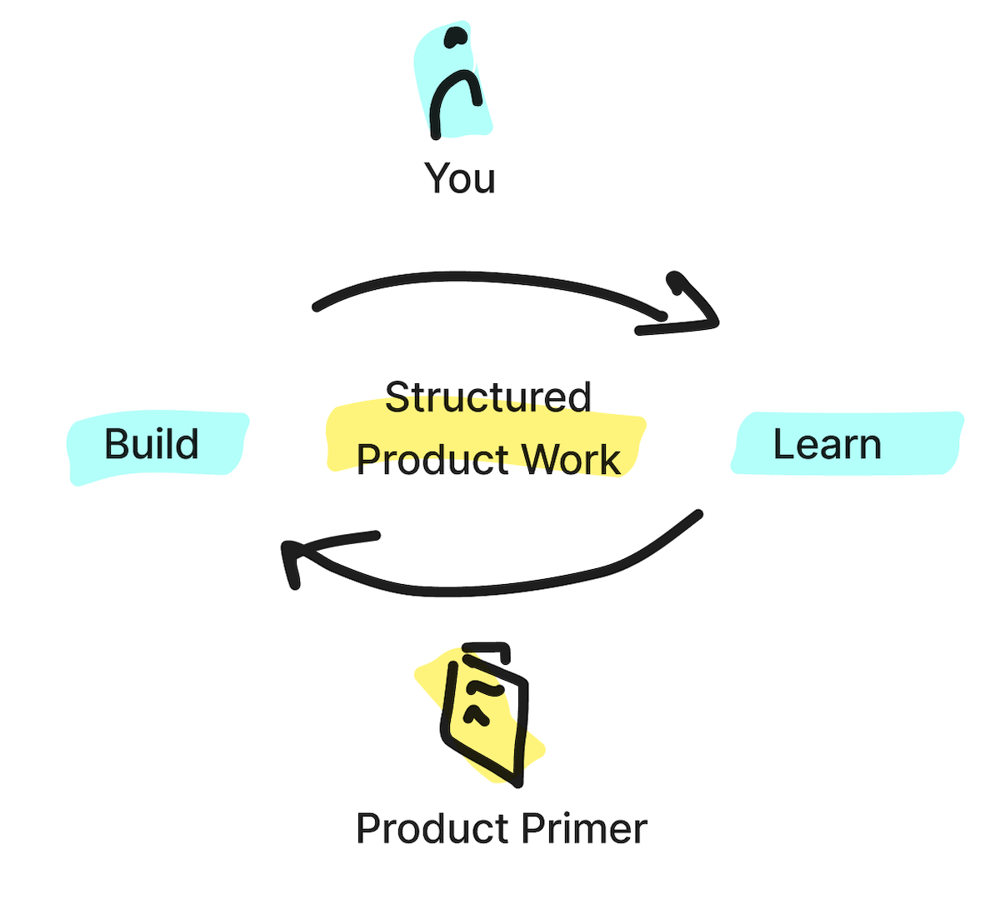

Product Primer
A Starter Guide to Building Great* Products (*great is not always successful)
Introduction
Welcome to Product Primer – A Starter Guide to Building Great Products* (*great is not always successful).
The primer presents a collection of theoretical frameworks and practical methods for building products.
It challenges the conventional notion that a great product is automatically a successful one.
Instead, it focuses on what's in your control - empowering you build great products that serve a purpose and solve real problems.
Product work as a skill and Product Management as a craft is essentially problem solving at different abstraction levels,
with varying level of detail and varying lengths of iterations. The Product Primer splits product building into
three levels, which are addressed in the three main chapters:

- What is the purpose of the product: Finding the key value proposition
- Keep your focus in the right things: Turning purpose into practice with a sound product strategy
- What to build: Solving users problems with meaningful solutions
The perspectives and advice offered in this primer are highly opinionated,
drawn directly from the author's own extensive experience.
Whether you're a seasoned professional or just starting out, this primer is designed to guide you through the
practices, structures and thinking frameworks that allow you to focus on the outcomes, building a great product
and learning how to make it better.